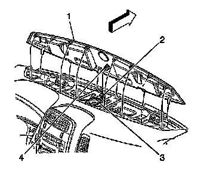

Defroster Grille Replacement
Defroster Grille Replacement
Removal Procedure

1. Using a flat bladed tool pry upward on the grille in order to release the retaining fasteners.
2. Disconnect the sunload sensor wiring connector (4).
3. Remove the grille (1) from the I/P retainer.
Installation Procedure
1. Line up the tabs on the front of the defroster grille with the holes on the I/P retainer.
2. Connect the sunload sensor wiring connector (4).
3. lower the grille (1) and seat the retainers on the I/P.